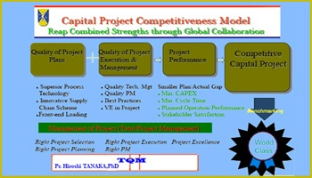
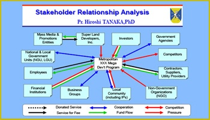
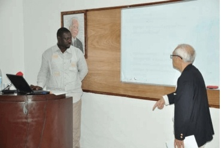
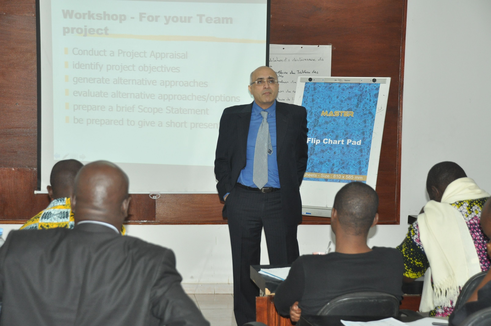
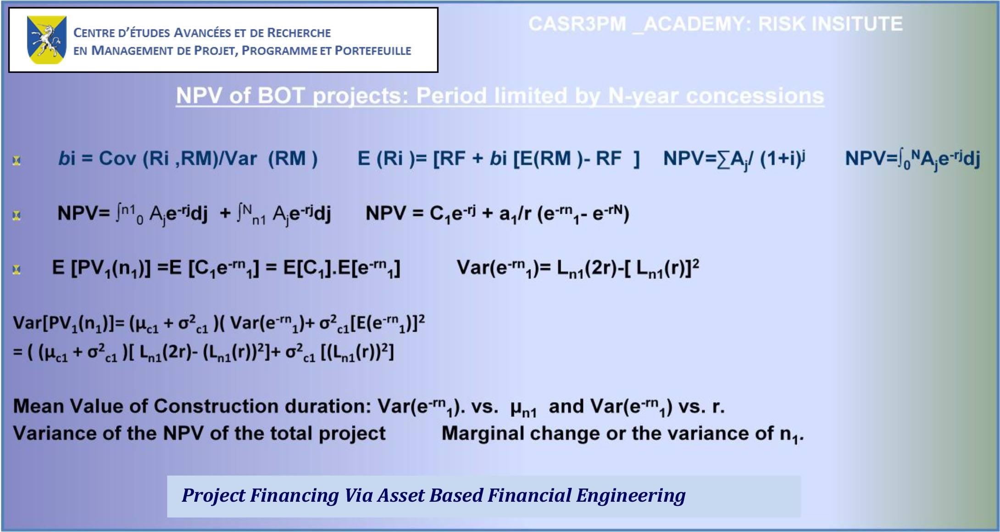
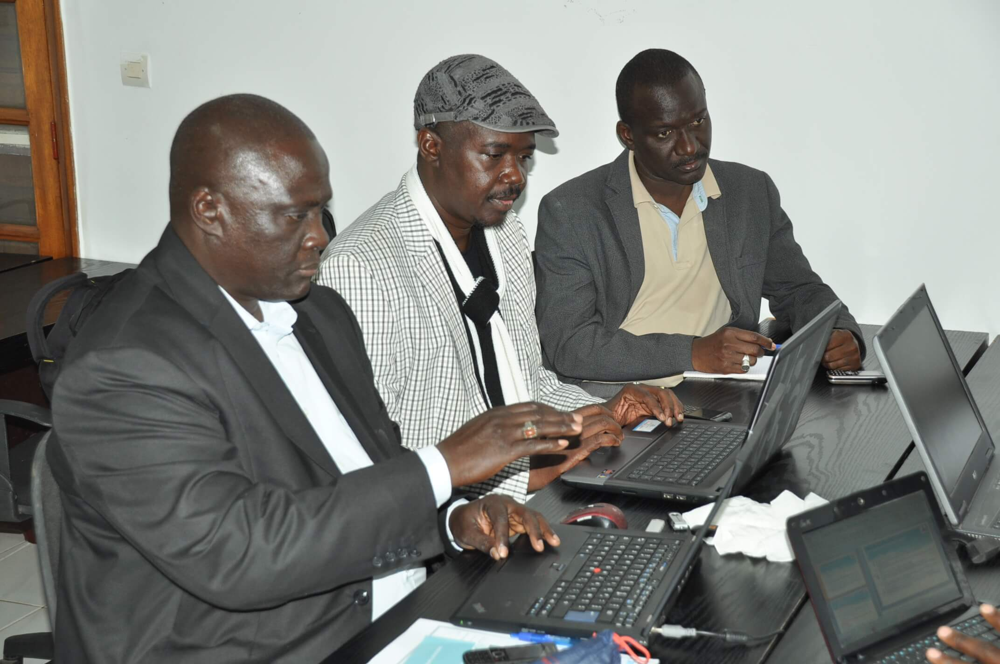

La Recherche au CASR 3PM:

Le centre a pour vocation de combiner programmes académiques et prise en compte des problématiques de développement économique
et social durable dans une perspective de recherche appliquée et d’avoir ainsi un impact
réel à court et moyen termes tant sur les hommes, les équipes que sur les organisations.
À titre d’illustration combiner recherche et développement organisationnel conduit à
proposer:
- Formation de haut niveau parfaitement adaptée à des futurs cadres et managers
de grands projets;
- Possibilités pour les pays du Sud de bénéficier d’un enseignement de qualité
sur place tout en bénéficiant de la richesse d’échanges internationaux;
- Recherche dans le domaine précis des projets d’infrastructure afin de combler
l’écart existant entre performance attendue et performance réelle.
Un mode d’investigation des situations et des expériences et de production des connaissances constructiviste et analogique.
Il est à noter que les recherches du Centre sont basées sur une approche situationnelle,
et donc que les travaux prennent en compte la dimension spécifique du contexte des problématiques,
à la fois en terme de temps et d’environnement particulier. Les situations et « objets
» de recherches sont ainsi considérés selon une double perspective ontologique d’ « être
» et de « devenir ». La production de connaissances s’appuie sur une position épistémologique
social-constructiviste équilibrée et sur un fond méthodologique permettant la compréhension
des situations et des expériences par raisonnement analogique.


Recherche « fondamentale »:
- Recherche
académique, avec un accent mis sur les perspectives ontologiques, épistémologiques
et conceptuelles permettant de comprendre les fondements de la discipline, les nouvelles
tendances et la dynamique d’évolution du champ scientifique du management de projet,
ainsi que des hypothèses sous-jacentes, et des suppositions supportant les différentes
écoles de pensées. “Basic research of a more academic or cutting edge nature. Designed
to generate new concepts or theories or identify areas for future exploration.” (Définition
du PMI®).

Recherche sur les Bonnes Pratiques, avec deux orientations :
- Recherche
appliquée: “Applied research: the process of applying basic research teachings and
sound research methodologies to evolve a specific potential product or application
of potential practical use”. (Definition du PMI®)
- Recherche
sur la valeur créée par l’utilisation de méthodologies et d’outils: “Exploration
of the value in use or the potential use of a product, service, or technique from
applied research. Description of technology in use in a limited arena potentially
applicable to a greater portion of the profession.” (Définition du PMI®);
- Définir
les orientations ontologiques et épistémologies, et les théories supportant les programmes
du Centre dans le domaine. À titre d’exemple : les recherches sur la nature du management
de projet comme champ scientifique et sa dynamique d’évolution, ou encore l’exploration
de la recherche en management de projet : les neufs écoles de pensées ;
- Fournir
un support et un contenu aux programmes par la recherche des « meilleures pratiques
» telles que le développement de standard internationaux et de méthodologies avancées
;
- Développer
le champ de connaissance et la discipline, accroître la réputation du Centre par
les programmes proposés, l’implication de ses membres dans les réseaux de recherches
internationaux et les associations professionnelles;
- Contribuer
au développement de la Communauté par la diffusion et dissémination des « meilleures
pratiques », et au développement durable de la profession ;
- Participer
au développement des compétences du laboratoire, de ses membres et des étudiants
selon leurs motivations, intérêts et besoins;
- Être
le fondement et support du programme doctoral en management de projet (PhD).

CASR 3PM Risk Institute:
CASR3PM RISK INSTITUTE, est un laboratoire de recherche du Centre, qui étudie les différents variables de risques ayant un
impact direct ou indirect sur les projets et programmes conduits en Afrique. L’institut
en collaboration avec des chercheurs et experts, a pour mission d’apporter des solutions
adéquates à la gestion des risques, basées sur des méthodes scientifiques appliquées.

L'institut est spécialisé sur l’identification, l’analyse, l’évaluation et la gestion des
risques de projets et programmes en Afrique, mais aussi dans le développement d'outils
d'analyse novateurs et des approches, adaptés à la gestion des risques inhérents aux
projets et programmes.
Domaines de Recherches:

Les trois principaux domaines de recherche:
- Les fondements
du management de projet (perspectives philosophiques, ontologiques, épistémologiques,
et théoriques);
- Personnes,
Équipes and Organisation, les compétences individuelles, des équipes et des organisations;
- Standard
and Meilleures Pratiques
Axe de Recherche :
La mission du Centre est de délivrer des programmes qui répondent aux normes internationales et mieux adaptés aux besoins
et aux contextes des pays émergeants, soutenus par une recherche de qualité en management
stratégique de projets, programmes et portefeuilles. Cette recherche s’appuie sur l’expertise
d’un corps professoral expérimenté, qui est constitué d’experts reconnus au plan mondial,
ayant publiés de nombreux ouvrages et papiers.
 Les résultats de ces recherches supporteront
le Centre dans la conception et la mise en ouvre de ses différents en fournissant une
vaste gamme d’outils sophistiqués de l'ingénierie financière appliquée au management
de projets et programmes dans le contexte spécifique de l’Afrique Sud-Sahara. Le Centre
consacre une part importante de ses recherches à l'analyse de la rentabilité des investissements
des projets et programmes. Son champs d’action s’étend et concerne essentiellement les
domaines tels que:
Les résultats de ces recherches supporteront
le Centre dans la conception et la mise en ouvre de ses différents en fournissant une
vaste gamme d’outils sophistiqués de l'ingénierie financière appliquée au management
de projets et programmes dans le contexte spécifique de l’Afrique Sud-Sahara. Le Centre
consacre une part importante de ses recherches à l'analyse de la rentabilité des investissements
des projets et programmes. Son champs d’action s’étend et concerne essentiellement les
domaines tels que:
- Les
Montages de types PPP, PPI, BOO et BOT;
- Le
cout du capital dans les pays émergents (WACC©);
- Le
cout de conflits des mégaprojets dans les (WAC©);
- Le
financement de méga projets dans le domaine des infrastructures.
Ces travaux de recherches menés par divers professeurs et experts associés ont pour finalité d’améliorer le management des
projets et programmes et de produire des best practices basés sur les standards internationaux
adaptés aux contextes africain, afin de garantir le retour sur investissement (ROI) des
projets et programmes engagés.
L'objet de cette recherche est d’analyser le taux élevé d’échec des projets et programmes entrepris dans certains pays du
Sud afin de proposer des éléments de solutions. Pour cela, cette recherche met en évidence
la nécessité de bien formuler des études de préfaisabilités et de faisabilités des projets
et programmes, et les hypothèses seront testés sur un échantillon de 40 projets et programmes
en Afrique, déjà exécutés ou en cour d’exécutions en recourant à la méthode de corrélation
canonique.

Valorisation des Recherches:
L’équipe de recherche en management de projet travail sur les trois domaines suivants, chaque domaine faisant partie des
trois types de recherche et centres d’intérêts exposés plus haut et développés au sein
du laboratoire :
- Les fondements
du management de projet (perspectives philosophiques, ontologiques, épistémologiques,
et théoriques) ;
- Personnes,
Équipes & Organisation, les compétences individuelles, des équipes et des organisations
;
- Standard
& Meilleures Pratiques.
Chaire d'Entreprise
Une chaire d’entreprise et de recherche est un pôle d’expertise financé par une (ou parfois par plusieurs) entreprise et/ou
organisation.
Objectifs:
Ses objectifs sont de faire avancer la recherche académique et appliquée sur une problématique
pointue, élaborer des programmes de formation innovants pour le secteur économique concerné
et créer de l’innovation par l’élaboration de contenu spécifique et l’organisation d’événements
dédiés.

Les chaires d’entreprises ont pour objectif de faciliter la coopération entre l’entreprise
et l’enseignement supérieur sur une problématique de management.
Par exemple:
- Management
stratégique de projets, programmes ou portefeuilles de projets et programmes;
- Développement
et mise en place de méthodologie de management de management de projets et programmes;
- Développement
et mise ne place de méthode d’évaluation des grands projets, évaluation des compétences
et plan de développement par approche de type certification professionnelle ou évaluation
basée sur la performance en situation de travail.
La Chaire d’entreprise fait appel aux ressources humaines et compétences du Centre et, plus
particulièrement, la recherche et l’enseignement.
Elle s’appuie également sur les compétences et les pratiques des entreprises et répond à
un besoin de l’économie.
Ainsi une Chaire d'Entreprise(s) associe une entreprise au Centre de manière significative
et durable. Elle garantit une large communication sur le nom de l'entreprise, et un partage
de ses valeurs, de ses objectifs et de sa politique avec tous les acteurs associés :
étudiants, enseignants, diplômés, journalistes, etc.
Pour que les retombées soient manifestes, l'engagement réciproque doit être pérenne: 3 à
5 ans minimum.

Les prés-requis de la création d’une chaire d’entreprises
Une chaire d’entreprise ne peut être créée que si plusieurs conditions sont réunies :
- La mise en évidence
d’une thématique de management importante pour le tissu économique et social : marché
porteur ou en mutation, secteur innovant;
- Un (ou plusieurs)
enseignant-chercheur, responsable de la chaire d’entreprise, reconnu dans le domaine
par ses pairs et par le monde économique;
- Une entreprise
prête à investir des moyens humains et financiers.
Un comité de pilotage, composé des financeurs, collectivités, entreprise, du Centre, est
chargé de valider la création de chaires et d’assurer le suivi de celles-ci.
Les champs d’actions d’une chaire d’entreprise :
Elle regroupe plusieurs types d’activités, qui peuvent être mises en œuvre à des moments
et dans un ordre variables, compte tenu des ressources humaines et financières disponibles:
- Organisation de
rencontres avec l’entreprise de la Chaire : échanges de bonnes pratiques;
- Organisation de
conférences thématiques à notoriété nationale et internationale;
- Mise en place de
séminaires spécialisés;
- Création de formations
déployées ensuite dans le Centre ou dans l'entreprise;
- Participation prioritaire
des entreprises aux comités scientifiques des programmes;
- Élaboration d’études
de cas en relation avec une entreprise;
- Intervention de
dirigeants et cadres de l’entreprise en formation ou conférence;
- Opérations spécifiques
en fonction de la demande des membres du groupe;
- Définition de projets
de recherche fondamentale ou appliquée, qui peuvent être menés par des équipes de
professeurs-chercheurs, de doctorants et d'étudiants constituées par le Centre;
- L’appui des collectivités
peut permettre également à de petites entreprises de créer une Chaire d’entreprises.